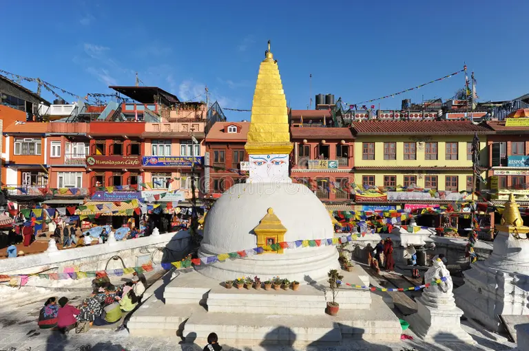
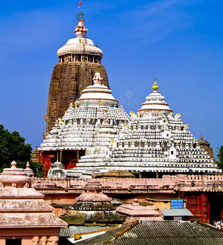

Jagannath Temple


Jal Mandir
The Jagannath Temple is a Hindu temple dedicated to the god Jagannath, a form of Vishnu in Hinduism. It is located in Puri in the state of Odisha, situated on the eastern coast of India. As per temple records, King Indradyumna of Avanti built the main temple of Jagannath at Puri.
The present temple was rebuilt from the eleventh century onwards, on the site of the pre-existing temples in the compound, but not the main Jagannath temple, and begun by Anantavarman Chodaganga, the first king of the Eastern Ganga dynasty.[3] Many of the temple rituals are based on Oddiyana Tantras which are the refined versions of Mahayana Tantras as well as Shabari Tantras which are evolved from Tantric Buddhism and tribal beliefs respectively. The local legends link the idols with aboriginal tribes and the daitapatis (servitors) claim to be descendants of the aboriginals.[4] The temple is one of the 108 Abhimana Kshethram of the Vaishnavite tradition.
The temple is famous for its annual Ratha Yatra, or chariot festival to honor the three gods, in which the three principal deities are pulled on huge and elaborately decorated raths, or temple cars. The worship is performed by the Bhil Sabar tribal priests, as well as priests of other communities in the temple.
Unlike the stone and metal icons found in most Hindu temples, the image of Jagannath is made of spruce wood, and is ceremoniously replaced every 12 or 19 years by an exact
The temple is one of the Char Dham pilgrimage sites. It is also famous because many legends believe that Krishna's heart was placed here, and the material that it is made from damages the heart, so they have to change it every seven years
The temple is sacred and holy to all Hindus, and especially in those of the Vaishnava traditions. Many great Vaishnava saints, such as Ramanujacharya, Madhvacharya, Nimbarkacharya, Vallabhacharya and Ramananda were closely associated with the temple.[8][9] Ramanuja established the Emar Matha in the south-eastern corner of the temple, and Adi Shankaracharya established the Govardhan Math, which is the seat of one of the four Shankaracharyas. It is also of particular significance to the followers of Gaudiya Vaishnavism, whose founder, Chaitanya Mahaprabhu, was attracted to the deity, Jagannath, and lived in Puri for many years.
History
The temple was rebuilt by the King of the Eastern Ganga dynasty, Anantavarman Chodaganga, in the 11th century CE, as described by the Kendupatna copper-plate inscription of his descendant, Narasimhadeva II and Rajendra Chola from the mother side.[1] Anantavarman was originally a Shaivite, and became a Vaishnavite sometime after he conquered the Utkala region, in which the temple is located, in 1112 CE. A 1134–1135 CE inscription records his donation to the temple. Therefore, the temple construction must have started sometime after 1112 CE
According to a story in the temple chronicles, it was founded by Anangabhimadeva II. Different chronicles variously mention the year of construction as 1196, 1197, 1205, 1216, or 1226.[13] This suggests that the temple's construction was completed or that the temple was renovated during the reign of Anantavarman's son, Anangabhima.[14] The temple complex was further developed during the reigns of the subsequent kings, including those of the Ganga dynasty and the Gajapati dynasty.
The temple annals, the Madala Panji, records that the Jagannath temple has been invaded and plundered eighteen times.[16] The temple is believed to have been attacked by Kalapahad, a Muslim convert general, in the 16th century.[17] Also as per scriptures like Bhavishya Malika Jagannath Temple is also about to host a massive fight in between good and evil.[18] Some incidences have already taken place indicating what's imminent
Deities
Jagannath, Subhadra and Balabhadra are a trio of deities worshipped at the temple. The inner sanctum of the temple contains the deities of them carved from sacred neem logs, known as daru sitting on the bejewelled platform or ratnabedi, along with the deities of Sudarshana Chakra, Madanmohan, Sridevi and Vishwadhatri.[20] The deities are adorned with different clothing and jewels according to the season. Worship of these deities predates the building of the temple, and may have originated in an ancient tribal shrine.
The oldest mention of the deity is in the Oddiyana Vajrayāna Tantric text Jñānasiddhi by Indrabhuti, which opens with an invocation of Jagannath.[22][note 1] Sarala Das in his Sarala Mahabharata, presents Lord Jagannath in multiple ways, with an emphasis on his connection to Krishna. Additionally, Sarala Das also refers to Lord Jagannath in association with Buddha, reflecting the diverse religious influences in Odisha's traditions
Legends
According to legends in Madala Panji, the construction of the first Jagannath temple was commissioned by King Indradyumna, a Malava king, mentioned in the Mahabharata and the Puranas
Indradyumna put up for Jagannath to build the tallest monument in the world. It was 1,000 cubits (457.2 metres) high. He invited Brahma, the cosmic creator, consecrate the temple and the images
The traditional story concerning the origins of the Jagannath temple is that the original image of Jagannath at the end of the Dvapara Yuga, was manifested near a banyan tree, near the shore in the form of an Indranila Mani, or the Blue Jewel. It was so dazzling that it could grant an instant moksha, so the god Dharma, wanted to hide it in the earth, and was successful. In the Kali Yuga, Indradyumna wanted to find that mysterious image, and to do so, he performed harsh penance to obtain his goal. Vishnu then instructed him to go to the seashore of Puri, and find a floating log to make an image from its trunk
Then, Indradyumna found the log of wood. He did a yajna, from which Narasimha appeared and instructed that Narayana should be made as a four-fold expansion, i.e., Paramatma as Vasudeva (Krishna), his Vyuha as Samkarshana (Balabhadra), his Yogamaya as Subhadra, and his Vibhava as Sudarshana. After this, Vishwakarma appeared in the form of an artisan and prepared images of Jagannath, Balabadra and Subhadra from the tree.
When this log, radiant with light, was seen floating in the sea, Narada told the king to make three deities out of it and place them in a pavilion. Indradyumna got Vishwakarma, the architect of gods, to build a magnificent temple to house the deities, and Vishnu himself appeared in the guise of a carpenter to make the deities, on condition that he was to be left undisturbed until he finished the work
But just after two weeks, the queen of Indradyumna became very anxious. She took the carpenter to be dead as no sound came from the temple. Therefore, she requested the king to open the door. Thus, they went to see Vishnu at work, at which the latter abandoned his work, leaving the deities unfinished. The deity was devoid of any hands. But a divine voice told Indradyumna to install them in the temple. It has also been widely believed that in spite of the deity being without hands, it can watch over the world and be its lord. Thus, the idiom
Entry and Darshan
Non-Hindus (excluding Jains, Sikhs, Buddhists) and foreigners are not permitted to enter the temple.[31][32] Such a rule is believed to have existed since the temple was built, and at present, it often becomes a subject to controversy and debates that have lasted for several decades.[33][34][35] According to Ganeshi Lal, the former Governor of Odisha, foreigners can enter the temple only if he/she can meet the Gajapati servitors and the Shankaracharya, then he/she could also be allowed to witness Jagannath. But, this theory has not wielded influence yet, and continues to be a subject of longstanding debate.[36] The temple is open everyday from 5:00 am to 10:30 pm.
Cultural integrity
Starting from Jagannath himself, history has it that he was a tribal deity, adorned by the Bhils and Sabar people, as a symbol of Narayana. Another legend claims him to be Nilamadhava, an image of Narayana made of blue stone and worshipped by the tribals. He was brought to Nilagiri, the blue mountain, or Nilachala, and installed there as Jagannath, in company with Balabhadra and Subhadra.
The images made of wood are also claimed to have their distant linkage with the Vanvasis, or forest dwellers, as a system of worshipping wooden poles. To cap it all, the Daitapatis, who have a fair share of responsibilities to perform rituals of the temple, are claimed to be descendants of the hill tribes of Odisha, also believed to be a close relative of Jagannath.
Hence, the beginning of the cultural history of Shrikshetra, known as the cultural capital of Odisha is found in the cultures of Hindu tribes. The three deities came to be claimed as the symbols of Samyak Darshan, Samyak Jnana and Samyak Charita, usually regarded as Ratnatraya, the triple gems of the Jain culture, assimilation of which leads to omniscience and Moksha (salvation).